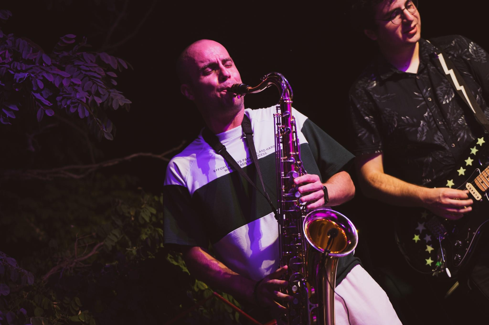
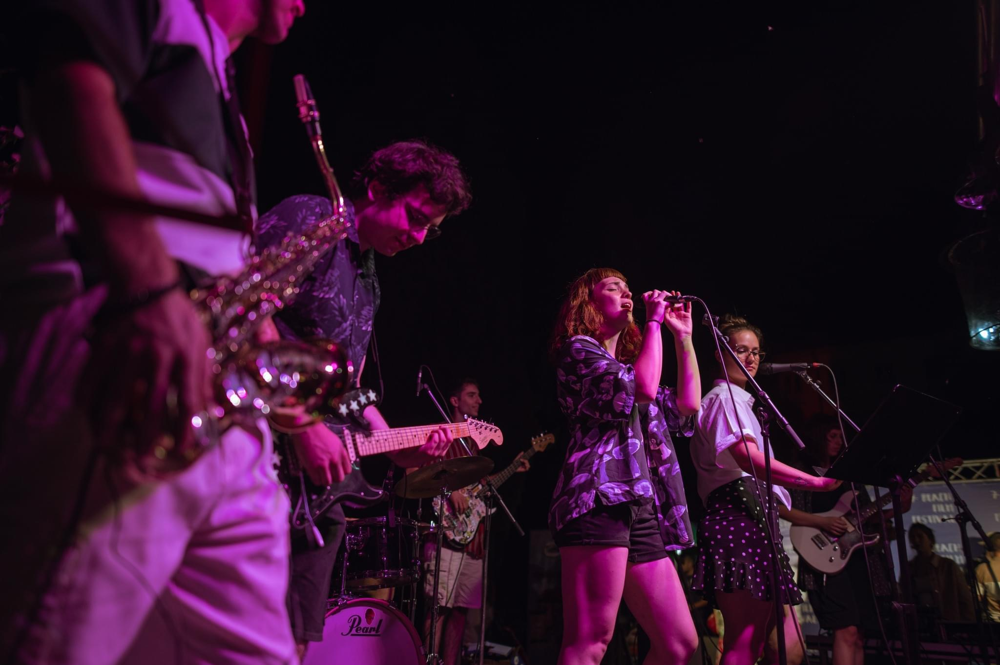
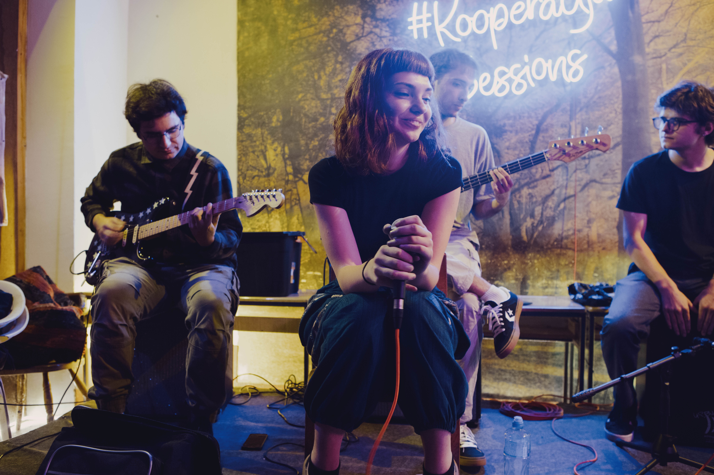
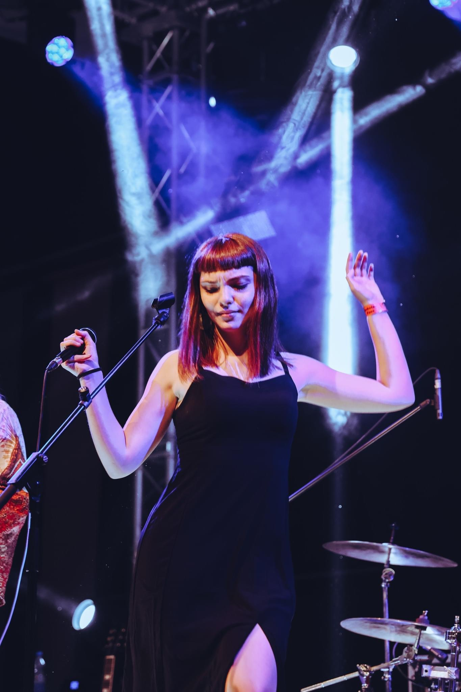
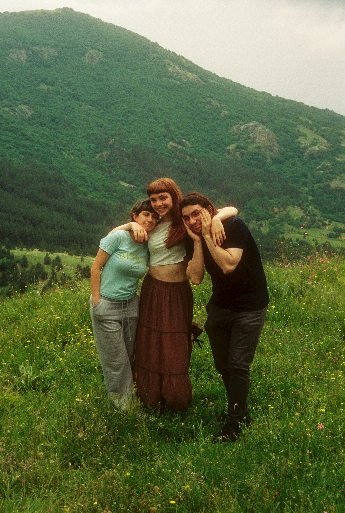
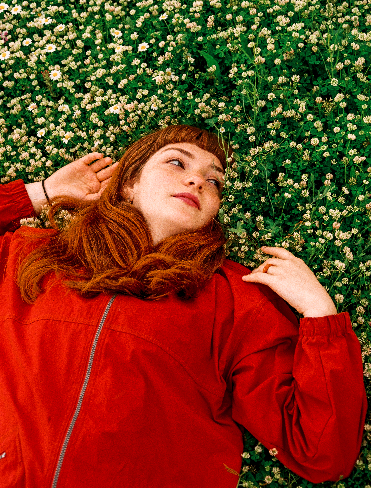
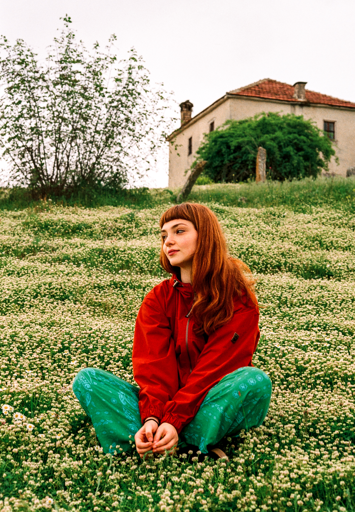
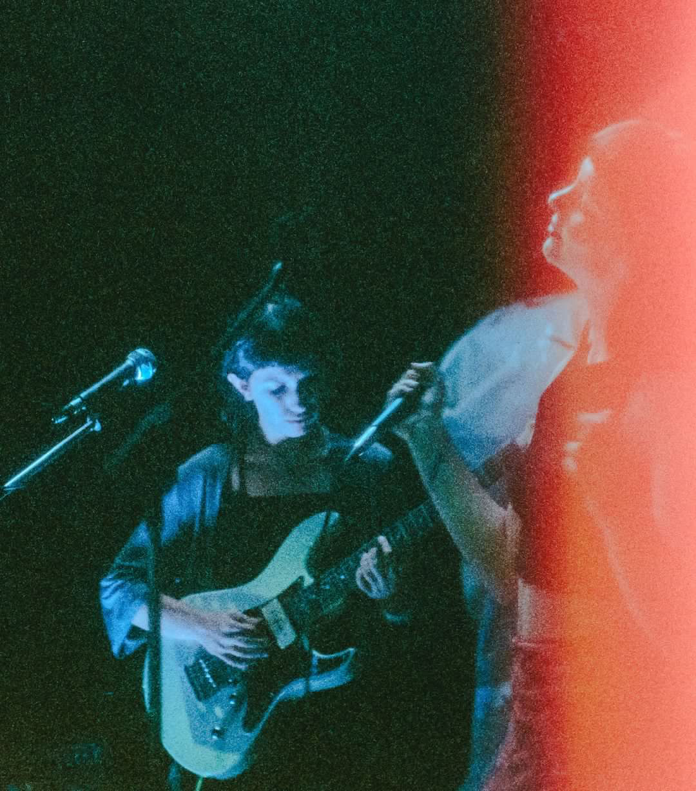
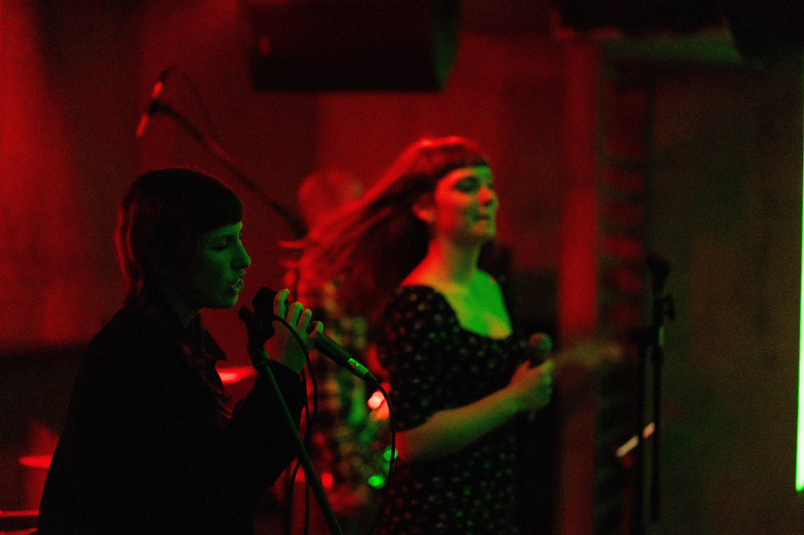
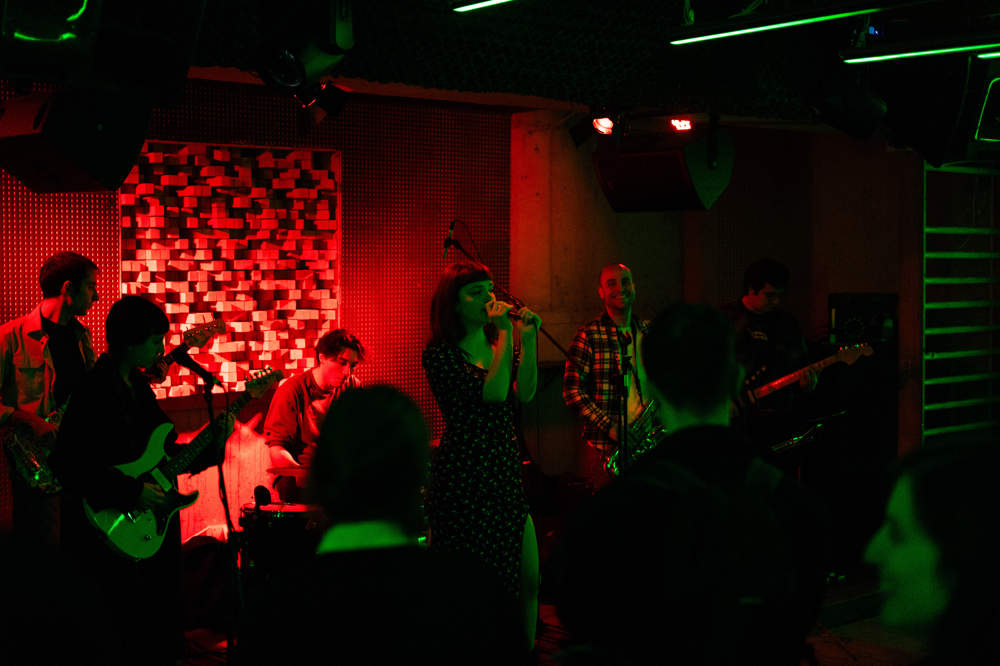

Short Music Previews
Short Description
Sioto Jazz is an alternative rock band from the sunny streets of Bitola, Macedonia, formed in 2022. Blending raw emotion with introspective melodies, the group dives into the heart of small-town summers, fleeting connections, and the pull between roots and wanderlust—think introspective anthems that hit like a warm breeze mixed with a storm.
Long Description
Sioto Jazz hails from Bitola, Macedonia, where the band formed in 2022. Despite the name, Sioto Jazz focuses on alternative rock, channeling gritty, melodic energy into songs that capture the essence of growing up in a place where time feels frozen in the best and toughest ways. The band's sound draws from the quiet rhythms of their hometown, weaving stories of old friends drifting away for brighter horizons, the thrill of youthful promises under starry skies, and the ache of watching seasons change while holding onto what matters.
The group crafts lyrics that keep it real and personal, creating tracks that feel like late-night drives or rooftop escapes, full of nostalgia for those endless summer nights and the resilience it takes to build something new from the ashes of the past. Whether it's the joy of shared silences or the rush of unspoken feelings, Sioto Jazz's music embraces the emptiness and turns it into something powerful. For fans of reflective rock that doesn't shy away from the raw edges of life, Sioto Jazz is just getting started, with room for more dreamers.
Line Up
| Name | Role |
|---|---|
| Anastasija | Lead Vocal |
| Martin | Guitar |
| Eva | Vocal Guitar |
| Mystery Person #1 | Bass |
| Ilija | Saxophone |
| Mystery Person #2 | Drums |
| Mystery Person #3 | Executive |
| Some cool guy we take with us | Sound Lights |
Photos










Logo & Banners
Getting to Know Us
The text below was compiled after getting to know Sioto Jazz, specifically Martin, Eva, Anastasija, and Gorazd by Dushica Brachikj. It was conducted in September 2024.
Martin: I had a band before, “Smooth But Not,” with which we recorded an album that was, let’s say, popular in certain circles. After some time, my friend Viktor said, “Let’s play something,” and we played some old songs from that band. We clicked, so I invited Anastasija to join as a vocalist, with the plan to start something new.
Anastasija: Yes, the idea was to get together, jam, but somehow that initial idea, that music, didn’t click. Months passed, and they reached out to me again with an idea for a different project, and that’s when the idea clicked. At first, it was Viktor, me, and Martin, and we needed one more person on an instrument. I invited Eva, and boom, the four of us came together.
Gorazd: They’ve been doing this band for two years, and I’ve been with them for one year. They needed to record a live session for XOTEL but didn’t have a bassist, and the same for Strovija, so that’s how I got involved. Andrej is our band manager; whenever there’s tension or misunderstanding in the band, he’s there to point things out and motivate us to talk it out. This is a call to other bands to find someone like Andrej—someone who can point out and resolve problems honestly and directly.
Martin: By the way, many people have been part of the group so far: Viktor Stojceski on drums, Ilija Volceski on saxophone, Martina Stevanovska as a backing vocal, Armin Amedovski on bass, Damjan Grujo on drums, and on the album, Santiago Vasquez plays classical guitar and Malfrid Vigdal plays double bass.
Martin: We’re a supergroup because we all come from different bands and operate more on the principle of “whoever can and whenever they can.” As for why the others are great... for example, Blagojche is an excellent drummer—he keeps great time and tempo, very consistent, and I need that because I play with delay. Gogo is a very good bassist, creative, and knows how to add elements that weren’t originally planned. Anastasija sings very consistently and can sing the same vocal line countless times in the same way. Without Eva, it simply sounds empty, and Ilija brings all the flair to the music.
Eva: Anastasija is great because she always brings good energy. Martin is great because he always has melodic songs.
Anastasija: Basically, Martin is the brain of the band. He writes the lyrics, comes up with melodies, and everything. That’s what I’d highlight about Martin—his creativity. And it’s great that we’re all open to new things, giving each other space to express ourselves creatively.
Martin: I listened to The National a lot, especially while working on the album. Poetically, I’m very inspired by Ben Gibbard—he’s the frontman of Death Cab for Cutie—and stylistically, in terms of guitar tone, by The Smashing Pumpkins. I like doing conceptual things, which is why our album feels like a story, probably inspired by Pink Floyd and The Smashing Pumpkins’ *Mellon Collie and the Infinite Sadness*, which are cohesive works with a beginning and an end.
Anastasija: For example, Eva and I listened to Khruangbin during an art residency; we played their albums. They looked so visually sweet and immersed in what they were doing—maybe that, that moment.
Eva: If we’re talking about bands, there’s also Men I Trust, Still Corners, and Sneaker Pimps.
Martin: At least for me, the creative process—generally, not for all songs—involves first finding a progression with the most basic chords. Over that progression, I come up with a vocal melody, which already has a rhythm, and then it’s easy to write lyrics. The lyrics just need to be semantically crafted and fit the melody in the right places—usually starting with a verse, or maybe two or three, then adding a chorus. The whole creative process is acoustic guitar and vocals. Once this is complete as a whole, the chords are brought to rehearsal—the chords, vocals, and lyrics are there, but everything else is jammed out.
Anastasija: Initially, we rehearsed the songs for the album that way. I’d go to Martin’s, and he’d have his guitar, and I’d have the lyrics to set the song. After that, it’s easy to add the saxophone and everything else.
Martin: “Patience”—it’s an old song, but the process to bring it from start to finish took the longest. We put the most love into that song, and I’m still not satisfied with how it turned out. For example, there’s an interesting story: there’s a stop after the second chorus—it happened completely by accident. I accidentally deleted the drums in that part and thought, “Hey, that’s cool.”
Anastasija: Yes, yes, we all listened to it and said, “This stays like this, no changes.”
Martin: The fact that “jazz” is in the band’s name was somewhat ironic because we didn’t plan to play any jazz music at all. Then we added a saxophone, changed the drums a bit—adding a shuffle—and that’s how it integrated. I think that’s the unique element of the band: we might play something energetic, and then the whole song softens, and the drums start playing jazz, creating that contrast. “Sioto” came about completely by accident—when I tried to create an email, I doubled the letters in “Siot Toj Jazz,” then shortened the duplicates to get “Sioto,” and it sounded exotic and Japanese to me, so it stuck.
Eva: It blends naturally; it’s not complicated for us to perform.
Martin: Specifically for Macedonia, I think the obvious problem is that centralization is in Skopje. It’s not just that it negatively affects small towns, but it also impacts Skopje—because it’s overcrowded and has too much congestion. Generally, I think that’s not good—it’s not good for the country. But it’s very hard to motivate people to stay in small towns if they don’t have conditions like proper education and authentic culture. But you can’t just blame the country—it’s also described in the album that it depends on each individual. So, you need to be brave enough, have enough mental resilience, and remain in a small town to do something good for it—something positive... because if you don’t stay, no one else will. Everything you do for that place will come back to you with a lot of love. I have nothing against those who move abroad or, say, to Skopje; I just think it’s very important to leave something good for the environment that raised them and shaped them into who they are.
Gorazd: Definitely, music has the power to influence decentralization. For example, Ponder managed to bring in many bands from 11 different countries, and we witnessed a lot of attendance from all cities in Macedonia, and even beyond.
Eva: For me, it’s “Ghost” and “Patience.” I imagine myself just listening to those songs and doing nothing else.
Gorazd: I really love “Ink”—it’s on my playlist; I listen to it while I work.
Anastasija: For me, it’s “Ink” or “Jetpacks” because they’re very soft, gentle, and give me a feeling of nostalgia and sadness, but I love it. Like, for example, sitting outside, swinging on a hammock, drinking tea, and listening to them—that’s it.
Martin: For me, it’s “Mad” because every line in the song I can visualize as an image in my head—like how my room looked during that period, and also the boulevard in autumn, which is a reference to a song from my old band. Generally, I wouldn’t want to live in the songs because they’re sad and nostalgic; they remind me of other times that are complete and finished.
Gorazd: It’s the best feeling in the world, especially better on a bigger stage.
Martin: I think in front of a large audience, the fun is on stage, among us, but in a more intimate setting, you have more interaction with the audience—and I find that more interesting.
Eva: You need to be immersed in the moment and listen to the people around you.
Gorazd: That cliché—“We didn’t know we were making memories.”
Martin: First, you have to go outside to make memories—there are no memories from sitting at home. Personally, I used to be more introverted, and I preferred staying home and gaining skills, but I think that way, you don’t make memories; you don’t have many stories, and you don’t have much to “hold onto” when times get darker. You can’t say, “Okay, things are bad now, but at least I did this.” I reached a point where I got tired of that and realized I’m chasing stories in life. I’m willing to accept feeling bad, depressed, or anxious—just to have the story and the experience. Our album is just one of those stories I can say, “Okay, things are bad now, but at least this exists,” something that locks away the good feelings, moments, and experiences we’ve had and, in some way, connects us with the people who’ve left.